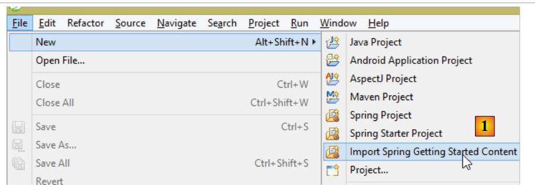
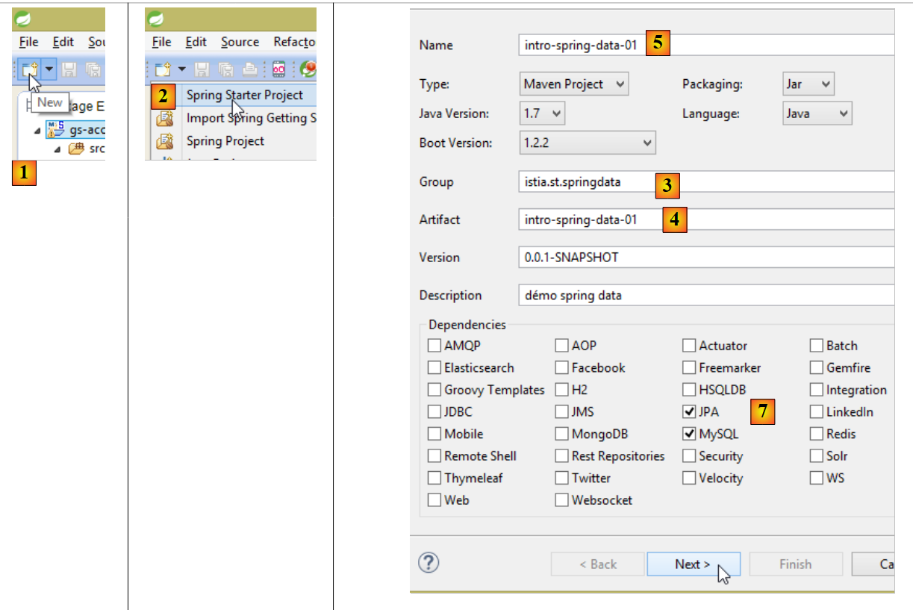
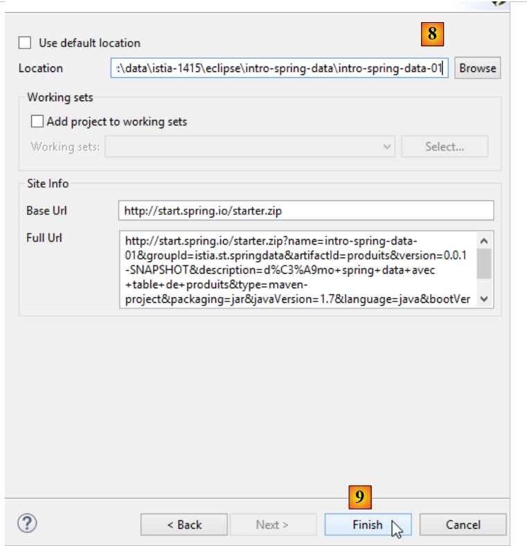

5. Introduction à Spring Data JPA
Dans ce chapitre, nous allons étudier l'architecture suivante :
 |
On intercale une couche [JPA] (Java Persistence API) entre la couche [DAO] et le pilote JDBC du SGBD. C'est désormais la couche JPA qui émet les ordres SQL destinés au SGBD. La couche [DAO] ne manipule plus d'ordres SQL mais seulement des objets appelés entités JPA qui sont des images des différentes tables de la base de données exploitée. Les champs de ces entités sont associés de façon unique à des colonnes de tables grâce à des annotations Java. C'est ce qui permet à la couche JPA de traduire en SQL les opérations de la couche [DAO] faites sur les entités JPA.
Spring Data est une branche de Spring qui s'intéresse à l'accès aux données, que celles-ci soient logées dans une base de données relationnelles SGBDR, une base NOSQL, ou d'autres types de dépôt. Nous ne nous intéressons ici qu'aux SGBDR et à leur accès via JPA. Par la suite il nous arrivera d'écrire [Spring JPA] pour désigner en fait [Spring Data JPA]. Dans l'architecture ci-dessus, la couche [Spring Data] amène des facilités à la couche [DAO] pour gérer les entités JPA.
JPA est en fait une spécification. Nous testerons trois de ses implémentations :
- Hibernate (http://hibernate.org/);
- EclipseLink (http://www.eclipse.org/eclipselink/);
- OpenJpa (http://openjpa.apache.org/);
5.1. Exemple-01
Sur le site de Spring existent de nombreux tutoriels pour démarrer avec Spring [http://spring.io/guides]. Nous allons utiliser l'un d'eux pour introduire Spring Data. Nous utilisons pour cela Spring Tool Suite (STS).
 |
- en [1], nous importons l'un des tutoriels de [spring.io/guides] ;
 |
- en [2], on choisit le tutoriel [Accessing Data Jpa] qui montre comment accéder à une base de données avec Spring Data ;
- en [3], on choisit un projet configuré par Maven ;
- en [4], le tutoriel peut être délivré sous deux formes : [initial] qui est une version vide qu'on remplit en suivant le tutoriel ou [complete] qui est la version finale du tutoriel. Nous choisissons cette dernière ;
- en [5], on peut choisir de visualiser le tutoriel dans un navigateur ;
- en [6], le projet final.
5.1.1. La configuration Maven du projet
Les dépendances Maven du projet sont configurées dans le fichier [pom.xml] :
<groupId>org.springframework</groupId>
<artifactId>gs-accessing-data-jpa</artifactId>
<version>0.1.0</version>
<parent>
<groupId>org.springframework.boot</groupId>
<artifactId>spring-boot-starter-parent</artifactId>
<version>1.2.3.RELEASE</version>
</parent>
<dependencies>
<dependency>
<groupId>org.springframework.boot</groupId>
<artifactId>spring-boot-starter-data-jpa</artifactId>
</dependency>
<dependency>
<groupId>com.h2database</groupId>
<artifactId>h2</artifactId>
</dependency>
</dependencies>
<properties>
<!-- use UTF-8 for everything -->
<project.build.sourceEncoding>UTF-8</project.build.sourceEncoding>
<project.reporting.outputEncoding>UTF-8</project.reporting.outputEncoding>
<start-class>hello.Application</start-class>
</properties>
- lignes 5-9 : définissent un projet Maven parent. C'est lui qui définit l'essentiel des dépendances du projet. Elles peuvent être suffisantes, auquel cas on n'en rajoute pas, ou pas, auquel cas on rajoute les dépendances manquantes ;
- lignes 12-15 : définissent une dépendance sur [spring-boot-starter-data-jpa]. Cet artifact contient les classes de Spring Data ;
- lignes 16-19 : définissent une dépendance sur le SGBD H2 qui permet de créer et gérer des bases de données en mémoire.
Regardons les classes amenées par ces dépendances :
 |  |  |
Elles sont très nombreuses :
- certaines appartiennent à l'écosystème Spring (celles commençant par spring) ;
- d'autres appartiennent à l'écosystème Hibernate (hibernate, jboss) dont on utilise ici l'implémentation JPA ;
- d'autres sont des bibliothèques de tests (junit, hamcrest) ;
- d'autres des bibliothèques de logs (log4j, logback, slf4j) ;
Nous allons les garder toutes. Pour une application en production, il faudrait ne garder que celles qui sont nécessaires.
Ligne 26 du fichier [pom.xml] on trouve la ligne :
<start-class>hello.Application</start-class>
Cette ligne est liée aux lignes suivantes :
<build>
<plugins>
<plugin>
<artifactId>maven-compiler-plugin</artifactId>
</plugin>
<plugin>
<groupId>org.springframework.boot</groupId>
<artifactId>spring-boot-maven-plugin</artifactId>
</plugin>
</plugins>
</build>
Lignes 6-9, le plugin [spring-boot-maven-plugin] permet de générer le jar exécutable de l'application. La ligne 26 du fichier [pom.xml] désigne alors la classe exécutable de ce jar.
5.1.2. La couche [JPA]
L'accès à la base de données se fait au travers d'une couche [JPA], Java Persistence API :
 |
 |
L'application est basique et gère des clients [Customer]. La classe [Customer] fait partie de la couche [JPA] et est la suivante :
package hello;
import javax.persistence.Entity;
import javax.persistence.GeneratedValue;
import javax.persistence.GenerationType;
import javax.persistence.Id;
@Entity
public class Customer {
@Id
@GeneratedValue(strategy = GenerationType.AUTO)
private long id;
private String firstName;
private String lastName;
protected Customer() {
}
public Customer(String firstName, String lastName) {
this.firstName = firstName;
this.lastName = lastName;
}
@Override
public String toString() {
return String.format("Customer[id=%d, firstName='%s', lastName='%s']", id, firstName, lastName);
}
}
Un client a un identifiant [id], un prénom [firstName] et un nom [lastName]. Chaque instance [Customer] représente une ligne d'une table de la base de données.
- ligne 8 : annotation JPA qui fait que la persistance des instances [Customer] (Create, Read, Update, Delete) va être gérée par une implémentation JPA. D'après les dépendances Maven, on voit que c'est l'implémentation JPA / Hibernate qui est utilisée ;
- lignes 11-12 : annotations JPA qui associent le champ [id] à la clé primaire de la table des [Customer]. La ligne 12, indique que l'implémentation JPA utilisera la méthode de génération de clé primaire propre au SGBD utilisé, ici H2 ;
Il n'y a pas d'autres annotations JPA. Des valeurs par défaut seront alors utilisées :
- la table des [Customer] portera le nom de la classe, ç-à-d [Customer] ;
- les colonnes de cette table porteront le nom des champs de la classe : [id, firstName, lastName] sachant que la casse n'est pas prise en compte dans le nom d'une colonne de table ;
On notera qu'à aucun moment, l'implémentation JPA utilisée n'est nommée.
5.1.3. La couche [Spring Data]
La classe [CustomerRepository] implémente la couche d'accès à la table [Customer]. Son code est le suivant :
 |
 |
package hello;
import java.util.List;
import org.springframework.data.repository.CrudRepository;
public interface CustomerRepository extends CrudRepository<Customer, Long> {
List<Customer> findByLastName(String lastName);
}
C'est donc une interface et non une classe (ligne 7). Elle étend l'interface [CrudRepository], une interface de Spring Data (ligne 5). Cette interface est paramétrée par deux types : le premier est le type des éléments gérés, ici le type [Customer], le second, le type de la clé primaire des éléments gérés, ici un type [Long]. L'interface [CrudRepository] est la suivante :
package org.springframework.data.repository;
import java.io.Serializable;
@NoRepositoryBean
public interface CrudRepository<T, ID extends Serializable> extends Repository<T, ID> {
<S extends T> S save(S entity);
<S extends T> Iterable<S> save(Iterable<S> entities);
T findOne(ID id);
boolean exists(ID id);
Iterable<T> findAll();
Iterable<T> findAll(Iterable<ID> ids);
long count();
void delete(ID id);
void delete(T entity);
void delete(Iterable<? extends T> entities);
void deleteAll();
}
Cette interface définit les opérations CRUD (Create – Read – Update – Delete) qu'on peut faire sur un type JPA T :
- ligne 8 : la méthode save permet de persister une entité T en base. Elle rend l'entité persistée avec la clé primaire que lui a donnée le SGBD. Elle permet également de mettre à jour une entité T identifiée par sa clé primaire id. Le choix de l'une ou l'autre action se fait selon la valeur de la clé primaire id : si celle-ci vaut null c'est l'opération de persistance qui a lieu, sinon c'est l'opération de mise à jour ;
- ligne 10 : idem mais pour une liste d'entités ;
- ligne 12 : la méthode findOne permet de retrouver une entité T identifiée par sa clé primaire id ;
- ligne 22 : la méthode delete permet de supprimer une entité T identifiée par sa clé primaire id ;
- lignes 24-28 : des variantes de la méthode [delete] ;
- ligne 16 : la méthode [findAll] permet de retrouver toutes les entités persistées T ;
- ligne 18 : idem mais limitées aux entités dont on a passé la liste des identifiants ;
Revenons à l'interface [CustomerRepository] :
package hello;
import java.util.List;
import org.springframework.data.repository.CrudRepository;
public interface CustomerRepository extends CrudRepository<Customer, Long> {
List<Customer> findByLastName(String lastName);
}
- la ligne 9 permet de retrouver un [Customer] par son nom [lastName] ;
Et c'est tout pour la couche [DAO]. Il n'y a pas de classe d'implémentation de l'interface précédente. Celle-ci est générée à l'exécution par [Spring Data]. Les méthodes de l'interface [CrudRepository] sont automatiquement implémentées. Pour les méthodes rajoutées dans l'interface [CustomerRepository], ça dépend. Revenons à la définition de [Customer] :
private long id;
private String firstName;
private String lastName;
La méthode de la ligne 9 est implémentée automatiquement par [Spring Data] parce qu'elle référence le champ [lastName] (ligne 3) de [Customer]. Lorsqu'il rencontre une méthode [findBySomething] dans l'interface à implémenter, Spring Data l'implémente par la requête JPQL (Java Persistence Query Language) suivante :
Il faut donc que le type T ait un champ nommé [something]. Ainsi la méthode
va être implémentée par un code ressemblant au suivant :
return [em].createQuery("select c from Customer c where c.lastName=:value").setParameter("value",lastName).getResultList()
où [em] désigne le contexte de persistance JPA. Cela n'est possible que si la classe [Customer] a un champ nommé [lastName], ce qui est le cas.
En conclusion, dans les cas simples, Spring Data nous permet d'implémenter la couche [DAO] avec une simple interface.
5.1.4. La couche [console]
 |
 |
La classe [Application] est la suivante :
package hello;
import org.springframework.beans.factory.annotation.Autowired;
import org.springframework.boot.CommandLineRunner;
import org.springframework.boot.SpringApplication;
import org.springframework.boot.autoconfigure.SpringBootApplication;
@SpringBootApplication
public class Application implements CommandLineRunner {
@Autowired
CustomerRepository repository;
public static void main(String[] args) {
SpringApplication.run(Application.class);
}
@Override
public void run(String... strings) throws Exception {
// save a couple of customers
repository.save(new Customer("Jack", "Bauer"));
repository.save(new Customer("Chloe", "O'Brian"));
repository.save(new Customer("Kim", "Bauer"));
repository.save(new Customer("David", "Palmer"));
repository.save(new Customer("Michelle", "Dessler"));
// fetch all customers
System.out.println("Customers found with findAll():");
System.out.println("-------------------------------");
for (Customer customer : repository.findAll()) {
System.out.println(customer);
}
System.out.println();
// fetch an individual customer by ID
Customer customer = repository.findOne(1L);
System.out.println("Customer found with findOne(1L):");
System.out.println("--------------------------------");
System.out.println(customer);
System.out.println();
// fetch customers by last name
System.out.println("Customer found with findByLastName('Bauer'):");
System.out.println("--------------------------------------------");
for (Customer bauer : repository.findByLastName("Bauer")) {
System.out.println(bauer);
}
}
}
- ligne 9 : la classe implémente l'interface [CommandLineRunner] qui est une interface [Spring Boot] (ligne 4). Cette interfae n'a qu'une méthode, celle de la ligne 19 ;
- ligne 8 : @SpringBootApplication est une annotation regroupant plusieurs annotations [Spring Boot] :
- @Configuration : indique que la classe est une classe de configuration ;
- @EnableAutoConfiguration : demande à [Spring Boot] de créer lui-même un certain nombre de beans en fonction de diverses propriétés, en particulier le contenu du Classpath du projet. Parce que les bibliothèques Hibernate sont dans le Classpath, le bean [entityManagerFactory] sera implémenté avec Hibernate. Parce que la bibliothèque du SGBD H2 est dans le Classpath, le bean [dataSource] sera implémenté avec H2. Dans le bean [dataSource], on doit définir également l'utilisateur et son mot de passe. Ici Spring Boot utilisera l'administrateur par défaut de H2, sa sans mot de passe. Parce que la bibliothèque [spring-tx] est dans le Classpath, c'est le gestionnaire de transactions de Spring qui sera utilisé ;
- @EnableWebMvc : si dans le Classpath se trouve la bibliothèque [spring-mvc]. Dans ce cas, une auto-configuration est faite pour l'application web ;
- @ComponentScan : qui dit à Spring où chercher les autres beans, configurations et services. Ici ils sont cherchés par défaut dans le package contenant la classe taguée, ç-à-d le package [hello]. Ainsi les classes [Customer] et [CustomerRepository] vont-elles être trouvées. Parce que la première a l'annotation [@Entity] elle sera cataloguée comme entité à gérer par Hibernate. Parce que la seconde étend l'interface [CrudRepository] elle sera enregistrée comme bean Spring ;
- lignes 11-12 : le bean [CustomerRepository] est injecté dans le code de la classe principale ;
- ligne 15 : la méthode statique [run] de la classe [SpringApplication] du projet Spring Boot est exécutée. Son paramètre est la classe qui a une annotation [Configuration] ou [EnableAutoConfiguration]. Tout ce qui a été expliqué précédemment va alors se dérouler. Le résultat est un contexte d'application Spring, ç-à-d un ensemble de beans gérés par Spring ;
- lignes 19-48 : les opérations qui suivent ne font qu'utiliser les méthodes du bean implémentant l'interface [CustomerRepository] ;
Les résultats console sont les suivants :
- lignes 1-8 : le logo du projet Spring Boot ;
- ligne 9 : la classe [hello.Application] est exécutée ;
- ligne 10 : [AnnotationConfigApplicationContext] est une classe implémentant l'interface [ApplicationContext] de Spring. C'est un conteneur de beans ;
- ligne 11 : le bean [entityManagerFactory] est implémenté avec la classe [LocalContainerEntityManagerFactory], une classe de Spring. Il gère la couche [JPA] ;
- ligne 12 : on voit apparaître [Hibernate]. C'est cette implémentation JPA qui a été choisie ;
- ligne 19 : un dialecte Hibernate est la variante SQL à utiliser avec le SGBD. Ici le dialecte [H2Dialect] montre qu'Hibernate va travailler avec le SGBD H2 ;
- lignes 21-22 : la base de données est créée. La table [CUSTOMER] est créée. Cela signifie qu'Hibernate a été configuré pour générer les tables à partir des définitions JPA, ici la définition JPA de la classe [Customer] ;
- lignes 26-30 : résultat de la méthode [findAll] de l'interface ;
- ligne 34 : résultat de la méthode [findOne] de l'interface ;
- lignes 38-39 : résultats de la méthode [findByLastName] ;
- lignes 41 et suivantes : logs de la fermeture du contexte Spring.
5.1.5. Configuration manuelle du projet Spring Data
Nous dupliquons le projet précédent dans le projet [gs-accessing-data-jpa-02] :
 |
Dans ce nouveau projet, nous n'allons pas nous reposer sur la configuration automatique faite par Spring Boot. Nous allons la faire manuellement. Cela peut être utile si les configurations par défaut ne nous conviennent pas.
Tout d'abord, nous allons expliciter les dépendances nécessaires dans le fichier [pom.xml] :
<?xml version="1.0" encoding="UTF-8"?>
<project xmlns="http://maven.apache.org/POM/4.0.0" xsi:schemaLocation="http://maven.apache.org/POM/4.0.0 http://maven.apache.org/maven-v4_0_0.xsd"
xmlns:xsi="http://www.w3.org/2001/XMLSchema-instance">
<modelVersion>4.0.0</modelVersion>
<groupId>org.springframework</groupId>
<artifactId>gs-accessing-data-jpa-02</artifactId>
<version>0.1.0</version>
<parent>
<groupId>org.springframework.boot</groupId>
<artifactId>spring-boot-starter-parent</artifactId>
<version>1.2.3.RELEASE</version>
</parent>
<dependencies>
<!-- Spring Data -->
<dependency>
<groupId>org.springframework.data</groupId>
<artifactId>spring-data-jpa</artifactId>
</dependency>
<!-- Hibernate -->
<dependency>
<groupId>org.hibernate</groupId>
<artifactId>hibernate-entitymanager</artifactId>
</dependency>
<!-- H2 Database -->
<dependency>
<groupId>com.h2database</groupId>
<artifactId>h2</artifactId>
</dependency>
<!-- Tomcat JDBC -->
<dependency>
<groupId>org.apache.tomcat</groupId>
<artifactId>tomcat-jdbc</artifactId>
</dependency>
</dependencies>
<properties>
<!-- use UTF-8 for everything -->
<project.build.sourceEncoding>UTF-8</project.build.sourceEncoding>
<project.reporting.outputEncoding>UTF-8</project.reporting.outputEncoding>
</properties>
<build>
<plugins>
<plugin>
<groupId>org.springframework.boot</groupId>
<artifactId>spring-boot-maven-plugin</artifactId>
</plugin>
</plugins>
</build>
<repositories>
<repository>
<id>spring-releases</id>
<name>Spring Releases</name>
<url>https://repo.spring.io/libs-release</url>
</repository>
<repository>
<id>org.jboss.repository.releases</id>
<name>JBoss Maven Release Repository</name>
<url>https://repository.jboss.org/nexus/content/repositories/releases</url>
</repository>
</repositories>
<pluginRepositories>
<pluginRepository>
<id>spring-releases</id>
<name>Spring Releases</name>
<url>https://repo.spring.io/libs-release</url>
</pluginRepository>
</pluginRepositories>
</project>
- lignes 10-14 : le projet Maven parent dont nous allons utiliser les bibliothèques qu'il définit ;
- lignes 18-21 : Spring Data utilisé pour accéder à la base de données ;
- lignes 23-26 : l'implémentation Hibernate de la spécification JPA ;
- lignes 28-31 : le SGBD H2 ;
- lignes 33-36 : les bases de données sont souvent utilisées avec des pools de connexions ouvertes qui évitent les ouvertures / fermetures de connexion à répétition. Ici, l'implémentation utilisée est celle de [tomcat-jdbc] ;
Dans le nouveau projet, l'entité [Customer] et l'interface [CustomerRepository] ne changent pas. On va changer la classe [Application] qui va être scindée en deux classes :
- [Config] qui sera la classe de configuration :
- [Main] qui sera la classe exécutable ;
 |
La classe exécutable [Application] est désormais la suivante :
package console;
import org.springframework.context.annotation.AnnotationConfigApplicationContext;
import repositories.CustomerRepository;
import config.AppConfig;
import entities.Customer;
public class Application {
public static void main(String[] args) {
// instanciation contexte Spring
AnnotationConfigApplicationContext context = new AnnotationConfigApplicationContext(AppConfig.class);
CustomerRepository repository = context.getBean(CustomerRepository.class);
// save a couple of customers
repository.save(new Customer("Jack", "Bauer"));
repository.save(new Customer("Chloe", "O'Brian"));
repository.save(new Customer("Kim", "Bauer"));
repository.save(new Customer("David", "Palmer"));
repository.save(new Customer("Michelle", "Dessler"));
...
// fermeture contexte
context.close();
}
}
- ligne 9 : la classe [Application] n'a plus d'annotations de configuration ;
- lignes 3-7 : on notera qu'il n'y a plus d'imports de packages [Spring Boot] ;
- ligne 12 : on instancie les beans Spring. On obtient le contexte de Spring qui contient la référence des beans ainsi créés ;
- ligne 13 : on demande une référence sur le bean de type [CustomerRepository] ;
La classe [Config] qui configure le projet est la suivante :
package config;
import javax.persistence.EntityManagerFactory;
import org.apache.tomcat.jdbc.pool.DataSource;
import org.springframework.context.annotation.Bean;
import org.springframework.context.annotation.Configuration;
import org.springframework.data.jpa.repository.config.EnableJpaRepositories;
import org.springframework.orm.jpa.JpaTransactionManager;
import org.springframework.orm.jpa.JpaVendorAdapter;
import org.springframework.orm.jpa.LocalContainerEntityManagerFactoryBean;
import org.springframework.orm.jpa.vendor.Database;
import org.springframework.orm.jpa.vendor.HibernateJpaVendorAdapter;
import org.springframework.transaction.PlatformTransactionManager;
import org.springframework.transaction.annotation.EnableTransactionManagement;
@EnableTransactionManagement
@EnableJpaRepositories(basePackages = { "repositories" })
@Configuration
// @ComponentScan(basePackages={"package1","package2"})
public class AppConfig {
// la base de données H2
@Bean
public DataSource dataSource() {
// source de données TomcatJdbc
DataSource dataSource = new DataSource();
// configuration accès JDBC
dataSource.setDriverClassName("org.h2.Driver");
dataSource.setUrl("jdbc:h2:./demo");
dataSource.setUsername("sa");
dataSource.setPassword("");
// une connexion ouverte initialement
dataSource.setInitialSize(1);
// résultat
return dataSource;
}
// le provider JPA
@Bean
public JpaVendorAdapter jpaVendorAdapter() {
HibernateJpaVendorAdapter hibernateJpaVendorAdapter = new HibernateJpaVendorAdapter();
hibernateJpaVendorAdapter.setShowSql(false);
hibernateJpaVendorAdapter.setGenerateDdl(true);
hibernateJpaVendorAdapter.setDatabase(Database.H2);
return hibernateJpaVendorAdapter;
}
// EntityManagerFactory
@Bean
public EntityManagerFactory entityManagerFactory(JpaVendorAdapter jpaVendorAdapter, DataSource dataSource) {
LocalContainerEntityManagerFactoryBean factory = new LocalContainerEntityManagerFactoryBean();
factory.setJpaVendorAdapter(jpaVendorAdapter);
factory.setPackagesToScan("entities");
factory.setDataSource(dataSource);
factory.afterPropertiesSet();
return factory.getObject();
}
// Transaction manager
@Bean
public PlatformTransactionManager transactionManager(EntityManagerFactory entityManagerFactory) {
JpaTransactionManager txManager = new JpaTransactionManager();
txManager.setEntityManagerFactory(entityManagerFactory);
return txManager;
}
}
- ligne 17 : l'annotation [@EnableTransactionManagement] indique que les annotations [@Transactional] doivent être interprétées. Les méthodes des interfaces [CrudRepository] ont ces annotations. Elles se déroulent alors à l'intérieur d'une transaction ;
- ligne 18 : l'annotation [@EnableJpaRepositories] permet de désigner les dossiers où se trouvent les interfaces Spring Data [CrudRepository]. Ces interfaces vont devenir des composants Spring et être disponibles dans son contexte ;
- ligne 19 : l'annotation [@Configuration] fait de la classe [Config] une classe de configuration Spring ;
- ligne 20 : l'annotation [@ComponentScan] permet de lister les dossiers où les composants Spring doivent être recherchés. Les composants Spring sont des classes taguées avec des annotations Spring telles que @Service, @Component, @Controller, ... Ici il n'y en a pas d'autres que ceux qui sont définis au sein de la classe [AppConfig], aussi l'annotation a-t-elle été mise en commentaires ;
- lignes 24-37 : définissent la source de données, la base de données H2. C'est l'annotation @Bean de la ligne 25 qui fait de l'objet créé par cette méthode un composant géré par Spring. Le nom de la méthode peut être ici quelconque. Cependant elle doit être appelée [dataSource] si l'EntityManagerFactory de la ligne 51 est absent et défini par autoconfiguration ;
- ligne 30 : la base de données s'appellera [demo] et sera générée dans le dossier du projet ;
- lignes 40-47 : définissent l'implémentation JPA utilisée, ici une implémentation Hibernate. Le nom de la méthode peut être ici quelconque ;
- ligne 43 : pas de logs SQL ;
- ligne 44 : la base de données sera créée si elle n'existe pas ;
- lignes 50-58 : définissent l'EntityManagerFactory qui va gérer la persistance JPA. La méthode doit s'appeler obligatoirement [entityManagerFactory] ;
- ligne 51 : la méthode reçoit deux paramètres ayant le type des deux beans définis précédemment. Ceux-ci seront alors construits puis injectés par Spring comme paramètres de la méthode ;
- ligne 53 : fixe l'implémentation JPA utilisée ;
- ligne 54 : fixent les dossiers où trouver les entités JPA ;
- ligne 55 : fixe la source de données à gérer ;
- lignes 61-66 : le gestionnaire de transactions. La méthode doit s'appeler obligatoirement [transactionManager]. Elle reçoit pour paramètre le bean des lignes 51-58 ;
- ligne 64 : le gestionnaire de transactions est associé à l'EntityManagerFactory ;
Les méthodes précédentes peuvent être définies dans un ordre quelconque.
L'exécution du projet donne les mêmes résultats. Un nouveau fichier apparaît dans le dossier du projet, celui de la base de données H2 :
 |
5.1.6. Création d'une archive exécutable
Pour créer une archive exécutable du projet, on peut procéder ainsi :
 |
- en [1] : on crée une configuration d'exécution ;
- en [2] : de type [Java Application]
- en [3] : désigne le projet à exécuter (utiliser le bouton Browse) ;
- en [4] : désigne la classe à exécuter ;
- en [5] : le nom de la configuration d'exécution – peut être quelconque ;
 |
- en [6] : on exporte le projet ;
- en [7] : sous la forme d'une archive JAR exécutable ;
- en [8] : indique le chemin et le nom du fichier exécutable à créer ;
- en [9] : le nom de la configuration d'exécution créée en [5] ;
10  |
- en [10], l'archive créée ;
Ceci fait, on ouvre une console dans le dossier contenant l'archive exécutable :
L'archive est exécutée de la façon suivante :
.....\dist>java -jar gs-accessing-data-jpa-02.jar
Les résultats obtenus dans la console sont les suivants :
5.1.7. Création d'un projet [Spring Data]
Pour créer un squelette de projet Spring Data, on peut procéder de la façon suivante :
 |
- en [1], on crée un nouveau projet ;
- en [2] : de type [Spring Starter Project] ;
- le projet généré sera un projet Maven. En [3], on indique le nom du groupe du projet ;
- en [4] : on indique le nom de l'artifact (un jar ici) qui sera créé par construction du projet ;
- en [5] : le nom Eclipse du projet – peut être quelconque (n'a pas à être identique à [4]) ;
- en [7] : on indique qu'on va créer un projet ayant une couche [JPA] avec le SGBD MySQL. Les dépendances nécessaires à un tel projet vont alors être incluses dans le fichier [pom.xml] ;
 |
- en [8], donner le nom du dossier du projet ;
- en [9], terminer l'assistant ;
 |
- en [10] : le projet créé ;
Le fichier [pom.xml] intègre les dépendances nécessaires à un projet JPA :
<?xml version="1.0" encoding="UTF-8"?>
<project xmlns="http://maven.apache.org/POM/4.0.0" xmlns:xsi="http://www.w3.org/2001/XMLSchema-instance"
xsi:schemaLocation="http://maven.apache.org/POM/4.0.0 http://maven.apache.org/xsd/maven-4.0.0.xsd">
<modelVersion>4.0.0</modelVersion>
<groupId>istia.st.springdata</groupId>
<artifactId>intro-spring-data-01</artifactId>
<version>0.0.1-SNAPSHOT</version>
<packaging>jar</packaging>
<name>intro-spring-data-01</name>
<description>démo spring data avec table de produits</description>
<parent>
<groupId>org.springframework.boot</groupId>
<artifactId>spring-boot-starter-parent</artifactId>
<version>1.2.3.RELEASE</version>
<relativePath/> <!-- lookup parent from repository -->
</parent>
<properties>
<project.build.sourceEncoding>UTF-8</project.build.sourceEncoding>
<start-class>demo.IntroSpringData01Application</start-class>
<java.version>1.7</java.version>
</properties>
<dependencies>
<dependency>
<groupId>org.springframework.boot</groupId>
<artifactId>spring-boot-starter-data-jpa</artifactId>
</dependency>
<dependency>
<groupId>mysql</groupId>
<artifactId>mysql-connector-java</artifactId>
<scope>runtime</scope>
</dependency>
<dependency>
<groupId>org.springframework.boot</groupId>
<artifactId>spring-boot-starter-test</artifactId>
<scope>test</scope>
</dependency>
</dependencies>
<build>
<plugins>
<plugin>
<groupId>org.springframework.boot</groupId>
<artifactId>spring-boot-maven-plugin</artifactId>
</plugin>
</plugins>
</build>
</project>
- lignes 14-19 : le projet Maven parent ;
- lignes 28-31 : la dépendance nécessaire à JPA – va inclure [Spring Data] ;
- lignes 32-36 : la dépendance sur le pilote JDBC de MySQL ;
- lignes 37-41 : les dépendances nécessaires aux tests JUnit intégrés avec Spring ;
La classe exécutable [Application] ne fait rien mais est pré-configurée :
package demo;
import org.springframework.boot.SpringApplication;
import org.springframework.boot.autoconfigure.SpringBootApplication;
@SpringBootApplication
public class IntroSpringData01Application {
public static void main(String[] args) {
SpringApplication.run(IntroSpringData01Application.class, args);
}
}
- l'annotation [@SpringBootApplication] fait de la classe une classe d'auto-configuration du projet ;
La classe de tests [ApplicationTests] ne fait rien mais est pré-configurée :
package demo;
import org.junit.Test;
import org.junit.runner.RunWith;
import org.springframework.boot.test.SpringApplicationConfiguration;
import org.springframework.test.context.junit4.SpringJUnit4ClassRunner;
@RunWith(SpringJUnit4ClassRunner.class)
@SpringApplicationConfiguration(classes = IntroSpringData01Application.class)
public class IntroSpringData01ApplicationTests {
@Test
public void contextLoads() {
}
}
- ligne 9 : l'annotation [@SpringApplicationConfiguration] permet d'exploiter le fichier de configuration [IntroSpringData01Application]. La classe de test bénéficiera ainsi de tous les beans définis par ce fichier ;
- ligne 8 : l'annotation [@RunWith] permet l'intégration de Spring avec JUnit : la classe va pouvoir être exécutée comme un test JUnit. [@RunWith] est une annotation JUnit (ligne 4) alors que la classe [SpringJUnit4ClassRunner] est une classe Spring (ligne 6) ;
Maintenant que nous avons un squelette d'application JPA, nous pouvons le compléter.